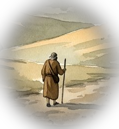
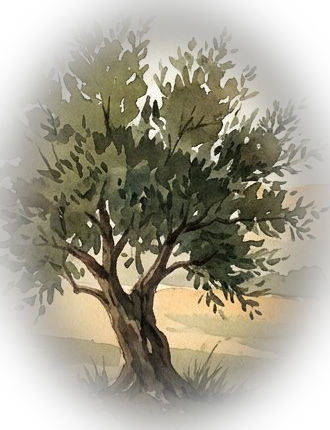

Scripture Memory
Memorize a book of the Bible with a walkable location.

Colossians
A walk through the town of Colossae.

James
Chapter 1, in the market square.

The Tabernacle
Free roam in the camp of Israel.
These pictures are cut from the painting you already have, only to show the idea. The real ones would be painted to match each section: a scroll, a town gate, the tabernacle.